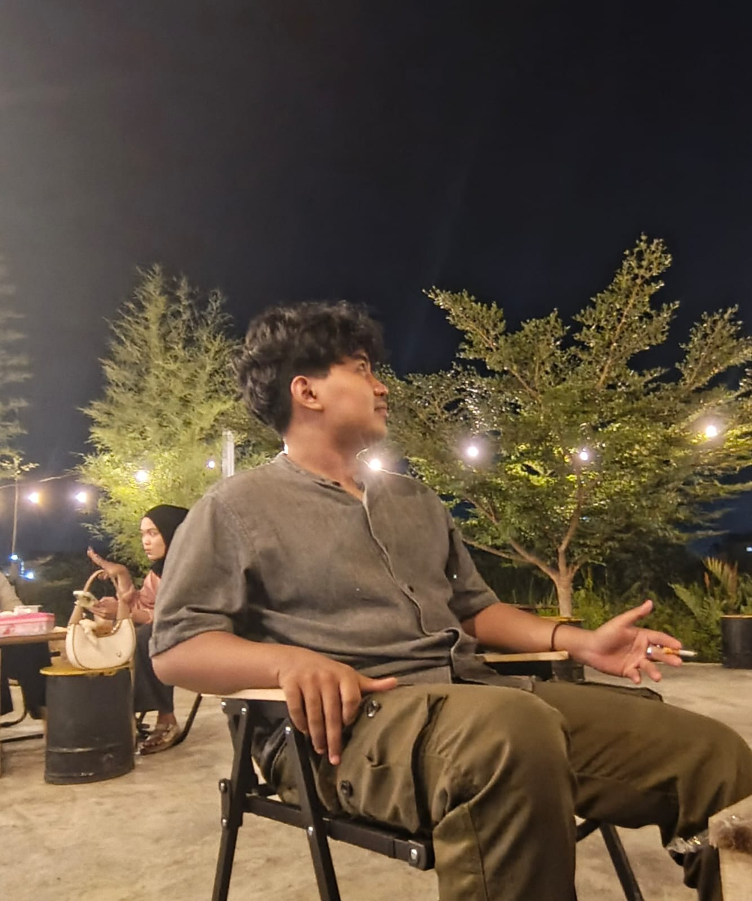

Saya memiliki pengalaman sebagai teknisi komputer dan printer serta terbiasa memberikan dukungan teknis kepada perusahaan dalam bidang IT, seperti troubleshooting komputer dan printer, pemeliharaan jaringan, serta pengujian konektivitas jaringan.
Saat ini saya sedang menempuh pendidikan S1 Informatika di Universitas Siber Asia melalui program perkuliahan online. Pendidikan tersebut membantu saya memperdalam pengetahuan dan keterampilan di bidang teknologi informasi, sekaligus mendukung pengembangan kompetensi yang saya terapkan dalam pekerjaan sehari-hari sebagai teknisi dan pendukung IT.
| Nama Sekolah | Tahun kelulusan |
|---|---|
| SDN 2 SARIGADUNG | 2017 |
| SMPN 4 SIMPANG EMPAT | 2020 |
| SMAN 1 SIMPANG EMPAT | 2023 |